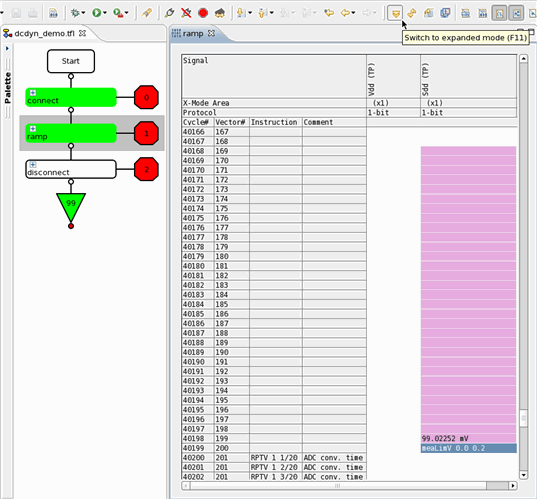
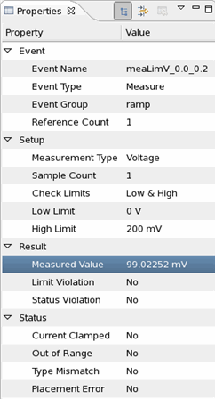

Executing the dynamic DC test and displaying the result
When executing the dynamic DC test, the measurement values are displayed in the signal pin column, in the cell right above the test point of each event. In case of a failure, the cell with the test point is highlighted in red.
About this task
Before you begin
The testflow must be complete and the test methods must have been built. For execution of a single test suite on both sites the testflow's run configuration must be set accordingly.
Procedure
- In the test flow editor select the 'connect' and 'ramp' test suites.
- Right-click and select Execute Selected.
Results
The measurement results appear in the signal pin column, in the cells above the test points. For example, for a test point on cycle number 40200, the result appears in row 40199. See the graphic below. To show the results of the other site, select the related site in the Site Control window.

Below the properties view showing the properties of the selected test point:

The properties view of a selected test point provides additional result details. Besides the measured value, it also shows the result of the event embedded threshold and clamp checks, whether the measurement range was exceeded, a measurement was requested without a proper selection of a measurement range, or if the measurements were triggered faster than the hardware could operate them (placement error).
What to do next
Next you can display the resulting values as waveform.
Functional changes
- Introduced in SmarTest 6.5.2